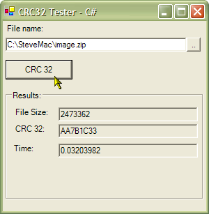

Crc32 (30K)
Crc32 (30K)
 23 Oct 2003
23 Oct 2003
Upped the FileStream buffer size to 8192 bytes, which improves performance.
Added SHA-1 and MD5 calculations using the Framework Cryptography classes. These algorithms generate longer hash values but perform similarly to CRC32 and are more secure and resistant.

Calculating CRC32 (and MDA5 and SHA-1) From .NET
Demonstrates how to calculate CRC32 checksums using the same method as WinZip.
The CRC (Cyclic Redundancy Checksum) algorithm is a highly optimised and powerful way of checking whether a large number of bytes have been modified or not. The algorithm scans through all the bytes and generates a 32 bit number to represent the contents - small changes in the file contents result in large changes in the check sum, and there is a very low chance that two different streams of bytes will have the same CRC. This article provides a high performance class for generating a WinZip compatible CRC32 checksum in .NET (VB.NET and C# versions provided). The sample also demonstrates using the Framework's Cryptography classes to generate SHA-1 and MD5 hashes.
Calculating CRC32
The CRC32 algorithm is a reliable way of checking whether an error has occurred in a sequence of bytes. There are various means of checking whether any bytes have been corrupted, for example, checksums and parity bits, but many simple schemes run a reasonably high chance of failing to detect an error depending on the type of corruption to the data that occurs. With CRC the chances of a corruption occurring which results in the same CRC are extremely remote.
An excellent description of the algorithm, and the various optimisations you can apply when implementing it (a fascinating and heavily mathematical process) is provided in Donald Knuth's classic programming books "The Art of Programming". You can find some online information here, although these do not cover the optimisation tricks in much detail (if at all):
Other Hash Algorithms
If you don't need to be compatible with WinZip then the .NET Framework comes with two excellent alternative Hash algorithms which have about the same performance as the CRC32 algorithm here, MD5 and SHA-1. SHA-1 is currently considered to be the most resistant to collisions, whilst MD5 is marginally quicker and also frequently used to create file checksums on Un*x platforms with the md5sum utility. The particularly nice thing about these hash algorithms is that they're both implemented within the System.Security.Cryptography namespace so they're particularly easy to use! The MD5 hash is provided in the MD5CryptoServiceProvider class and SHA-1 in SHA1CryptoServiceProvider. Both classes derive from the same base class and you use them in the same way:
f = new FileStream(fileName,
FileMode.Open, FileAccess.Read, FileShare.Read, 8192);
SHA1CryptoServiceProvider sha1 = new SHA1CryptoServiceProvider();
sha1.ComputeHash(f);
Since the resulting hash is somewhat longer than an integer (MD5 is 16 bytes long, SHA-1 is 20) the hash is typically distributed or transmitted as hex string. A StringBuilder makes it easy to generate the hex string:
hash = sha1.Hash;
buff = new StringBuilder();
foreach (byte hashByte in hash)
{
buff.Append(String.Format("{0:X1}", hashByte));
}
Console.WriteLine("Hash: {0}", buff.ToString());